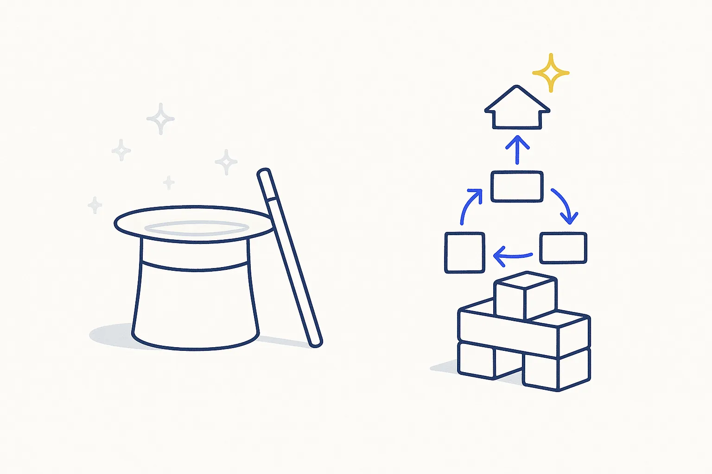
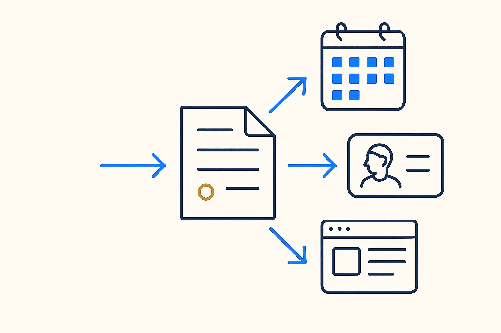
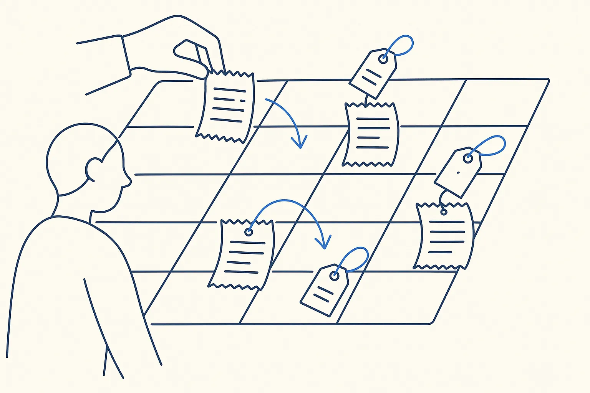
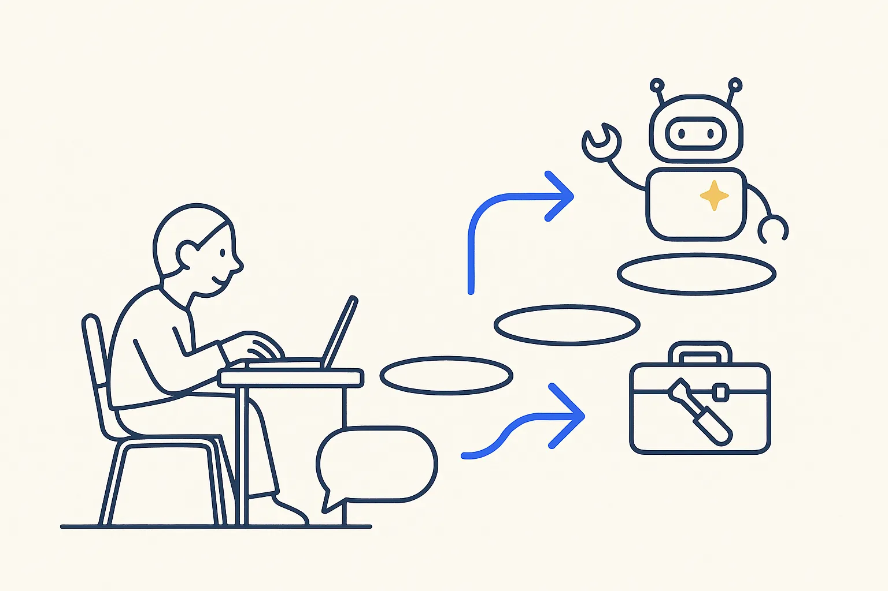
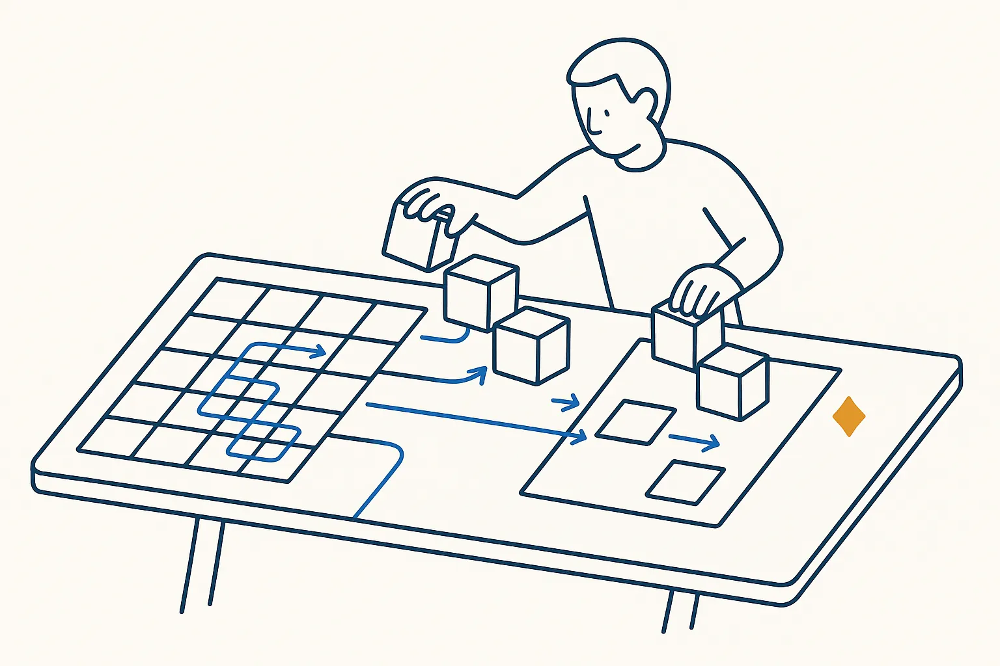

Structure Beats Magic
The thinking behind this site: why structure, rules and files you own make AI useful. Concepts, articles and the full personal system.
Jaco van der Laan

What it is
Structure Beats Magic is my main site and the thesis behind everything here: AI becomes reliable when it works on structure you own (clean data, written rules, files in one place), not when you hope the model figures it out.
What you find there
A library of concepts, a series of articles, and the full description of the personal system I run on myself: mail, calendar, finance, documents, travel and photos on one structured base.
How it connects to Build Days
A Build Day is the same thesis at the scale of one company and one day. You rent the AI; you own the structure. That structure is what you take home.
Links
Concepts behind it
- Structure Beats Magic — The magic isn't in the model; it's in the structure you give it.
- Rent the AI; Own the Structure — Models are swappable commodities; your structure is the durable asset.
- The Model Is the Easy Part — Everyone can rent the same model. What surrounds it — context, rules, memory, verification — is the only part that can be yours.
- Eat Your Own Dogfood — Use your own tool/method on your own real work before and while you ask anyone else to — dogfooding surfaces the flaws a demo hides.
- The Calendar Is the Spine — One time-axis is the backbone of a second brain — everything dated hangs off it.
- One-Way Publishing — You don't sync systems — you publish from one. Sync is where rot starts.
Used in these use cases
 One cockpit instead of fifteen appsActions, ideas, incidents, finance, documents and photos — all as files with status fields, all readable in one app on the phone.
One cockpit instead of fifteen appsActions, ideas, incidents, finance, documents and photos — all as files with status fields, all readable in one app on the phone.
One source, three publications: birthdaysA small case with a big principle: one file is the source, and the calendar, the contact list and a web page are publications generated from it.
Every receipt filed on the day it happenedReceipts, invoices and statements are filed as PDFs in the folder of the date they belong to, each with a small metadata file next to it. Matching them to bank lines becomes a join on date and amount.Related articles
- Vibe Coding Without the Hangover
- Stop Prompting, Start Directing: Claude for Your Vault — Structure Beats Magic
- Build Your First Skill: The Anatomy, Start to Finish — Structure Beats Magic
- Prompts, Skills, Plugins, MCP — Which Tool, When — Structure Beats Magic
- Skills Are the Unit That Compounds — Structure Beats Magic
- Red-Team Your Own AI (Before It Just Flatters You) — Structure Beats Magic
- The Image-Integrity Gate: I Caught My Own Site Faking It — Structure Beats Magic
- Rules Before Models — Structure Beats Magic
- Your Database Is a View — Structure Beats Magic
How this connects
More in Courses and my own sources

Anthropic AcademyAnthropicFree courses on working with Claude, from prompting to building agents.Read more →
Breakthrough ModelingJaco van der LaanData modeling for the AI era — including the case for building your own modeling app instead of paying for a tool you use a fraction of.Read more →